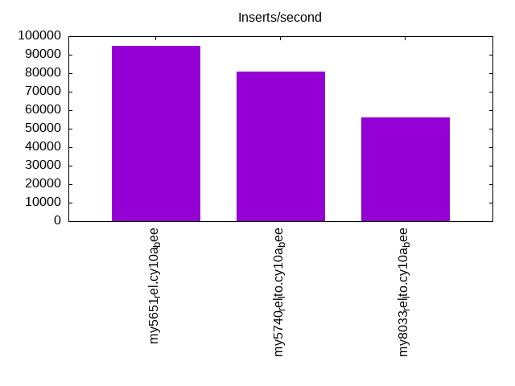

This is a report for the insert benchmark with 800M docs and 1 client(s). It is generated by scripts (bash, awk, sed) and Tufte might not be impressed. An overview of the insert benchmark is here and a short update is here. Below, by DBMS, I mean DBMS+version.config. An example is my8020.c10b40 where my means MySQL, 8020 is version 8.0.20 and c10b40 is the name for the configuration file.
The test server has 8 AMD cores, 16G RAM and an NVMe SSD. It is described here as the Beelink. The benchmark was run with 1 client and there were 1 or 3 connections per client (1 for queries or inserts without rate limits, 1+1 for rate limited inserts+deletes). There is 1 table. It loads 800M rows without secondary indexes, creates secondary indexes, then inserts 10M rows with a delete per insert to avoid growing the table. It then does 3 read+write tests for 3600s each that do queries as fast as possible with 100, 500 and then 1000 inserts/second/client concurrent with the queries and 1000 deletes/second to avoid growing the table. The database is larger than memory.
The tested DBMS are:
The numbers are inserts/s for l.i0 and l.i1, indexed docs (or rows) /s for l.x and queries/s for q100, q500, q1000. The values are the average rate over the entire test for inserts (IPS) and queries (QPS). The range of values for IPS and QPS is split into 3 parts: bottom 25%, middle 50%, top 25%. Values in the bottom 25% have a red background, values in the top 25% have a green background and values in the middle have no color. A gray background is used for values that can be ignored because the DBMS did not sustain the target insert rate. Red backgrounds are not used when the minimum value is within 80% of the max value.
| dbms | l.i0 | l.x | l.i1 | q100.1 | q500.1 | q1000.1 |
|---|---|---|---|---|---|---|
| my5651_rel.cy10a_bee | 94798 | 86507 | 1700 | 1035 | 1131 | 948 |
| my5740_rel_lto.cy10a_bee | 80718 | 109154 | 2292 | 960 | 1106 | 1002 |
| my8033_rel_lto.cy10a_bee | 56046 | 111683 | 2322 | 977 | 1050 | 963 |
This table has relative throughput, throughput for the DBMS relative to the DBMS in the first line, using the absolute throughput from the previous table. Values less than 0.95 have a yellow background. Values greater than 1.05 have a blue background.
| dbms | l.i0 | l.x | l.i1 | q100.1 | q500.1 | q1000.1 |
|---|---|---|---|---|---|---|
| my5651_rel.cy10a_bee | 1.00 | 1.00 | 1.00 | 1.00 | 1.00 | 1.00 |
| my5740_rel_lto.cy10a_bee | 0.85 | 1.26 | 1.35 | 0.93 | 0.98 | 1.06 |
| my8033_rel_lto.cy10a_bee | 0.59 | 1.29 | 1.37 | 0.94 | 0.93 | 1.02 |
This lists the average rate of inserts/s for the tests that do inserts concurrent with queries. For such tests the query rate is listed in the table above. The read+write tests are setup so that the insert rate should match the target rate every second. Cells that are not at least 95% of the target have a red background to indicate a failure to satisfy the target.
| dbms | q100.1 | q500.1 | q1000.1 |
|---|---|---|---|
| my5651_rel.cy10a_bee | 100 | 499 | 999 |
| my5740_rel_lto.cy10a_bee | 100 | 499 | 998 |
| my8033_rel_lto.cy10a_bee | 100 | 499 | 999 |
| target | 100 | 500 | 1000 |
l.i0: load without secondary indexes. Graphs for performance per 1-second interval are here.
Average throughput:
Insert response time histogram: each cell has the percentage of responses that take <= the time in the header and max is the max response time in seconds. For the max column values in the top 25% of the range have a red background and in the bottom 25% of the range have a green background. The red background is not used when the min value is within 80% of the max value.
| dbms | 256us | 1ms | 4ms | 16ms | 64ms | 256ms | 1s | 4s | 16s | gt | max |
|---|---|---|---|---|---|---|---|---|---|---|---|
| my5651_rel.cy10a_bee | 82.659 | 17.196 | 0.071 | 0.070 | 0.004 | 0.209 | |||||
| my5740_rel_lto.cy10a_bee | 0.333 | 99.336 | 0.193 | 0.136 | 0.002 | 0.142 | |||||
| my8033_rel_lto.cy10a_bee | 99.370 | 0.495 | 0.133 | 0.003 | 0.185 |
Performance metrics for the DBMS listed above. Some are normalized by throughput, others are not. Legend for results is here.
ips qps rps rmbps wps wmbps rpq rkbpq wpi wkbpi csps cpups cspq cpupq dbgb1 dbgb2 rss maxop p50 p99 tag 94798 0 831 3.2 460.3 33.9 0.009 0.035 0.005 0.366 12098 21.6 0.128 18 52.6 93.1 10.6 0.209 95296 76713 800m.my5651_rel.cy10a_bee 80718 0 0 0.0 406.9 29.0 0.000 0.000 0.005 0.368 9027 21.4 0.112 21 52.6 93.1 10.9 0.142 81010 71080 800m.my5740_rel_lto.cy10a_bee 56046 0 0 0.0 351.5 21.4 0.000 0.000 0.006 0.391 6742 20.1 0.120 29 52.4 61.0 11.1 0.185 56137 51142 800m.my8033_rel_lto.cy10a_bee
l.x: create secondary indexes.
Average throughput:
Performance metrics for the DBMS listed above. Some are normalized by throughput, others are not. Legend for results is here.
ips qps rps rmbps wps wmbps rpq rkbpq wpi wkbpi csps cpups cspq cpupq dbgb1 dbgb2 rss maxop p50 p99 tag 86507 0 565 82.5 698.2 104.3 0.007 0.977 0.008 1.235 1974 11.3 0.023 10 108.4 148.9 10.3 0.012 NA NA 800m.my5651_rel.cy10a_bee 109154 0 654 102.5 905.8 122.8 0.006 0.962 0.008 1.152 6214 12.1 0.057 9 117.7 158.2 10.2 0.013 NA NA 800m.my5740_rel_lto.cy10a_bee 111683 0 1800 168.7 2214.8 150.3 0.016 1.547 0.020 1.378 8851 43.8 0.079 31 117.2 125.8 10.4 0.011 NA NA 800m.my8033_rel_lto.cy10a_bee
l.i1: continue load after secondary indexes created. Graphs for performance per 1-second interval are here.
Average throughput:
Insert response time histogram: each cell has the percentage of responses that take <= the time in the header and max is the max response time in seconds. For the max column values in the top 25% of the range have a red background and in the bottom 25% of the range have a green background. The red background is not used when the min value is within 80% of the max value.
| dbms | 256us | 1ms | 4ms | 16ms | 64ms | 256ms | 1s | 4s | 16s | gt | max |
|---|---|---|---|---|---|---|---|---|---|---|---|
| my5651_rel.cy10a_bee | 23.011 | 71.204 | 5.784 | 0.001 | 0.808 | ||||||
| my5740_rel_lto.cy10a_bee | 52.790 | 43.975 | 3.234 | 0.001 | 0.363 | ||||||
| my8033_rel_lto.cy10a_bee | 56.407 | 40.114 | 3.479 | 0.236 |
Delete response time histogram: each cell has the percentage of responses that take <= the time in the header and max is the max response time in seconds. For the max column values in the top 25% of the range have a red background and in the bottom 25% of the range have a green background. The red background is not used when the min value is within 80% of the max value.
| dbms | 256us | 1ms | 4ms | 16ms | 64ms | 256ms | 1s | 4s | 16s | gt | max |
|---|---|---|---|---|---|---|---|---|---|---|---|
| my5651_rel.cy10a_bee | 1.768 | 92.130 | 6.096 | 0.004 | 0.001 | 0.599 | |||||
| my5740_rel_lto.cy10a_bee | 62.198 | 37.276 | 0.522 | 0.004 | 0.090 | ||||||
| my8033_rel_lto.cy10a_bee | 18.131 | 81.200 | 0.667 | 0.002 | 0.072 |
Performance metrics for the DBMS listed above. Some are normalized by throughput, others are not. Legend for results is here.
ips qps rps rmbps wps wmbps rpq rkbpq wpi wkbpi csps cpups cspq cpupq dbgb1 dbgb2 rss maxop p50 p99 tag 1700 0 7487 116.2 9961.1 314.1 4.404 70.008 5.859 189.172 46829 16.1 27.545 758 151.6 193.3 10.5 0.808 1697 699 800m.my5651_rel.cy10a_bee 2292 0 8363 130.7 11475.6 365.4 3.649 58.383 5.007 163.234 56299 24.6 24.563 859 154.7 196.8 10.7 0.363 2297 699 800m.my5740_rel_lto.cy10a_bee 2322 0 8601 134.4 14310.3 388.0 3.704 59.260 6.162 171.099 60184 26.2 25.916 903 153.9 164.0 10.7 0.236 2347 699 800m.my8033_rel_lto.cy10a_bee
q100.1: range queries with 100 insert/s per client. Graphs for performance per 1-second interval are here.
Average throughput:
Query response time histogram: each cell has the percentage of responses that take <= the time in the header and max is the max response time in seconds. For max values in the top 25% of the range have a red background and in the bottom 25% of the range have a green background. The red background is not used when the min value is within 80% of the max value.
| dbms | 256us | 1ms | 4ms | 16ms | 64ms | 256ms | 1s | 4s | 16s | gt | max |
|---|---|---|---|---|---|---|---|---|---|---|---|
| my5651_rel.cy10a_bee | 28.539 | 18.234 | 51.759 | 1.460 | 0.008 | 0.046 | |||||
| my5740_rel_lto.cy10a_bee | 14.773 | 29.358 | 54.023 | 1.836 | 0.010 | nonzero | 0.339 | ||||
| my8033_rel_lto.cy10a_bee | 4.742 | 38.688 | 55.233 | 1.309 | 0.028 | 0.052 |
Insert response time histogram: each cell has the percentage of responses that take <= the time in the header and max is the max response time in seconds. For max values in the top 25% of the range have a red background and in the bottom 25% of the range have a green background. The red background is not used when the min value is within 80% of the max value.
| dbms | 256us | 1ms | 4ms | 16ms | 64ms | 256ms | 1s | 4s | 16s | gt | max |
|---|---|---|---|---|---|---|---|---|---|---|---|
| my5651_rel.cy10a_bee | 0.042 | 69.375 | 30.583 | 0.150 | |||||||
| my5740_rel_lto.cy10a_bee | 1.833 | 90.444 | 7.708 | 0.014 | 0.345 | ||||||
| my8033_rel_lto.cy10a_bee | 35.097 | 62.333 | 2.569 | 0.125 |
Delete response time histogram: each cell has the percentage of responses that take <= the time in the header and max is the max response time in seconds. For max values in the top 25% of the range have a red background and in the bottom 25% of the range have a green background. The red background is not used when the min value is within 80% of the max value.
| dbms | 256us | 1ms | 4ms | 16ms | 64ms | 256ms | 1s | 4s | 16s | gt | max |
|---|---|---|---|---|---|---|---|---|---|---|---|
| my5651_rel.cy10a_bee | 13.653 | 67.542 | 18.806 | 0.052 | |||||||
| my5740_rel_lto.cy10a_bee | 55.681 | 44.139 | 0.167 | 0.014 | 0.320 | ||||||
| my8033_rel_lto.cy10a_bee | 46.250 | 52.597 | 1.153 | 0.046 |
Performance metrics for the DBMS listed above. Some are normalized by throughput, others are not. Legend for results is here.
ips qps rps rmbps wps wmbps rpq rkbpq wpi wkbpi csps cpups cspq cpupq dbgb1 dbgb2 rss maxop p50 p99 tag 100 1035 10125 158.1 5700.0 172.1 9.782 156.452 57.115 1766.291 40387 10.5 39.018 812 151.6 193.3 10.5 0.046 927 783 800m.my5651_rel.cy10a_bee 100 960 11125 173.8 8111.3 211.9 11.590 185.434 81.276 2173.873 51133 15.2 53.269 1267 154.7 196.8 10.7 0.339 927 799 800m.my5740_rel_lto.cy10a_bee 100 977 11044 172.6 8780.4 224.5 11.302 180.824 87.980 2303.235 49753 16.6 50.914 1359 153.9 164.0 10.7 0.052 943 799 800m.my8033_rel_lto.cy10a_bee
q500.1: range queries with 500 insert/s per client. Graphs for performance per 1-second interval are here.
Average throughput:
Query response time histogram: each cell has the percentage of responses that take <= the time in the header and max is the max response time in seconds. For max values in the top 25% of the range have a red background and in the bottom 25% of the range have a green background. The red background is not used when the min value is within 80% of the max value.
| dbms | 256us | 1ms | 4ms | 16ms | 64ms | 256ms | 1s | 4s | 16s | gt | max |
|---|---|---|---|---|---|---|---|---|---|---|---|
| my5651_rel.cy10a_bee | 32.229 | 15.256 | 51.783 | 0.728 | 0.005 | 0.044 | |||||
| my5740_rel_lto.cy10a_bee | 13.448 | 32.971 | 52.766 | 0.811 | 0.004 | 0.043 | |||||
| my8033_rel_lto.cy10a_bee | 5.066 | 39.664 | 54.421 | 0.841 | 0.009 | 0.053 |
Insert response time histogram: each cell has the percentage of responses that take <= the time in the header and max is the max response time in seconds. For max values in the top 25% of the range have a red background and in the bottom 25% of the range have a green background. The red background is not used when the min value is within 80% of the max value.
| dbms | 256us | 1ms | 4ms | 16ms | 64ms | 256ms | 1s | 4s | 16s | gt | max |
|---|---|---|---|---|---|---|---|---|---|---|---|
| my5651_rel.cy10a_bee | 14.222 | 83.883 | 1.894 | 0.125 | |||||||
| my5740_rel_lto.cy10a_bee | 78.458 | 21.450 | 0.092 | 0.092 | |||||||
| my8033_rel_lto.cy10a_bee | 67.533 | 32.392 | 0.075 | 0.097 |
Delete response time histogram: each cell has the percentage of responses that take <= the time in the header and max is the max response time in seconds. For max values in the top 25% of the range have a red background and in the bottom 25% of the range have a green background. The red background is not used when the min value is within 80% of the max value.
| dbms | 256us | 1ms | 4ms | 16ms | 64ms | 256ms | 1s | 4s | 16s | gt | max |
|---|---|---|---|---|---|---|---|---|---|---|---|
| my5651_rel.cy10a_bee | 14.561 | 80.550 | 4.881 | 0.008 | 0.086 | ||||||
| my5740_rel_lto.cy10a_bee | 94.283 | 5.708 | 0.008 | 0.056 | |||||||
| my8033_rel_lto.cy10a_bee | 92.878 | 6.967 | 0.156 | 0.036 |
Performance metrics for the DBMS listed above. Some are normalized by throughput, others are not. Legend for results is here.
ips qps rps rmbps wps wmbps rpq rkbpq wpi wkbpi csps cpups cspq cpupq dbgb1 dbgb2 rss maxop p50 p99 tag 499 1131 9326 145.5 4103.4 125.0 8.247 131.756 8.222 256.382 34432 10.2 30.446 722 151.6 193.3 10.5 0.044 1135 1055 800m.my5651_rel.cy10a_bee 499 1106 9272 144.9 4201.9 128.9 8.386 134.178 8.416 264.278 35712 11.7 32.301 847 154.7 196.8 10.7 0.043 1103 1036 800m.my5740_rel_lto.cy10a_bee 499 1050 8999 140.6 5393.8 140.1 8.575 137.198 10.803 287.377 36661 12.7 34.932 968 153.9 164.0 10.7 0.053 1055 990 800m.my8033_rel_lto.cy10a_bee
q1000.1: range queries with 1000 insert/s per client. Graphs for performance per 1-second interval are here.
Average throughput:
Query response time histogram: each cell has the percentage of responses that take <= the time in the header and max is the max response time in seconds. For max values in the top 25% of the range have a red background and in the bottom 25% of the range have a green background. The red background is not used when the min value is within 80% of the max value.
| dbms | 256us | 1ms | 4ms | 16ms | 64ms | 256ms | 1s | 4s | 16s | gt | max |
|---|---|---|---|---|---|---|---|---|---|---|---|
| my5651_rel.cy10a_bee | 23.990 | 18.368 | 55.675 | 1.956 | 0.011 | 0.051 | |||||
| my5740_rel_lto.cy10a_bee | 12.627 | 30.859 | 54.970 | 1.535 | 0.009 | 0.049 | |||||
| my8033_rel_lto.cy10a_bee | 4.876 | 36.867 | 56.696 | 1.541 | 0.019 | 0.057 |
Insert response time histogram: each cell has the percentage of responses that take <= the time in the header and max is the max response time in seconds. For max values in the top 25% of the range have a red background and in the bottom 25% of the range have a green background. The red background is not used when the min value is within 80% of the max value.
| dbms | 256us | 1ms | 4ms | 16ms | 64ms | 256ms | 1s | 4s | 16s | gt | max |
|---|---|---|---|---|---|---|---|---|---|---|---|
| my5651_rel.cy10a_bee | 49.422 | 48.818 | 1.760 | 0.120 | |||||||
| my5740_rel_lto.cy10a_bee | 68.386 | 31.526 | 0.088 | 0.096 | |||||||
| my8033_rel_lto.cy10a_bee | 90.944 | 8.558 | 0.497 | 0.113 |
Delete response time histogram: each cell has the percentage of responses that take <= the time in the header and max is the max response time in seconds. For max values in the top 25% of the range have a red background and in the bottom 25% of the range have a green background. The red background is not used when the min value is within 80% of the max value.
| dbms | 256us | 1ms | 4ms | 16ms | 64ms | 256ms | 1s | 4s | 16s | gt | max |
|---|---|---|---|---|---|---|---|---|---|---|---|
| my5651_rel.cy10a_bee | 12.354 | 85.789 | 1.857 | 0.063 | |||||||
| my5740_rel_lto.cy10a_bee | 96.321 | 3.667 | 0.010 | 0.003 | 0.092 | ||||||
| my8033_rel_lto.cy10a_bee | 83.290 | 16.385 | 0.325 | 0.056 |
Performance metrics for the DBMS listed above. Some are normalized by throughput, others are not. Legend for results is here.
ips qps rps rmbps wps wmbps rpq rkbpq wpi wkbpi csps cpups cspq cpupq dbgb1 dbgb2 rss maxop p50 p99 tag 999 948 11370 177.2 7125.8 216.6 11.991 191.400 7.134 222.065 47922 14.5 50.540 1223 151.6 193.3 10.5 0.051 943 879 800m.my5651_rel.cy10a_bee 998 1002 11648 182.0 7160.7 219.1 11.631 186.095 7.175 224.800 50341 16.5 50.265 1318 154.7 196.8 10.7 0.049 1007 864 800m.my5740_rel_lto.cy10a_bee 999 963 11460 179.1 9254.4 239.0 11.902 190.430 9.266 245.078 52136 17.7 54.145 1471 153.9 164.0 10.7 0.057 959 895 800m.my8033_rel_lto.cy10a_bee
l.i0: load without secondary indexes
Performance metrics for all DBMS, not just the ones listed above. Some are normalized by throughput, others are not. Legend for results is here.
ips qps rps rmbps wps wmbps rpq rkbpq wpi wkbpi csps cpups cspq cpupq dbgb1 dbgb2 rss maxop p50 p99 tag 94798 0 831 3.2 460.3 33.9 0.009 0.035 0.005 0.366 12098 21.6 0.128 18 52.6 93.1 10.6 0.209 95296 76713 800m.my5651_rel.cy10a_bee 80718 0 0 0.0 406.9 29.0 0.000 0.000 0.005 0.368 9027 21.4 0.112 21 52.6 93.1 10.9 0.142 81010 71080 800m.my5740_rel_lto.cy10a_bee 56046 0 0 0.0 351.5 21.4 0.000 0.000 0.006 0.391 6742 20.1 0.120 29 52.4 61.0 11.1 0.185 56137 51142 800m.my8033_rel_lto.cy10a_bee
l.x: create secondary indexes
Performance metrics for all DBMS, not just the ones listed above. Some are normalized by throughput, others are not. Legend for results is here.
ips qps rps rmbps wps wmbps rpq rkbpq wpi wkbpi csps cpups cspq cpupq dbgb1 dbgb2 rss maxop p50 p99 tag 86507 0 565 82.5 698.2 104.3 0.007 0.977 0.008 1.235 1974 11.3 0.023 10 108.4 148.9 10.3 0.012 NA NA 800m.my5651_rel.cy10a_bee 109154 0 654 102.5 905.8 122.8 0.006 0.962 0.008 1.152 6214 12.1 0.057 9 117.7 158.2 10.2 0.013 NA NA 800m.my5740_rel_lto.cy10a_bee 111683 0 1800 168.7 2214.8 150.3 0.016 1.547 0.020 1.378 8851 43.8 0.079 31 117.2 125.8 10.4 0.011 NA NA 800m.my8033_rel_lto.cy10a_bee
l.i1: continue load after secondary indexes created
Performance metrics for all DBMS, not just the ones listed above. Some are normalized by throughput, others are not. Legend for results is here.
ips qps rps rmbps wps wmbps rpq rkbpq wpi wkbpi csps cpups cspq cpupq dbgb1 dbgb2 rss maxop p50 p99 tag 1700 0 7487 116.2 9961.1 314.1 4.404 70.008 5.859 189.172 46829 16.1 27.545 758 151.6 193.3 10.5 0.808 1697 699 800m.my5651_rel.cy10a_bee 2292 0 8363 130.7 11475.6 365.4 3.649 58.383 5.007 163.234 56299 24.6 24.563 859 154.7 196.8 10.7 0.363 2297 699 800m.my5740_rel_lto.cy10a_bee 2322 0 8601 134.4 14310.3 388.0 3.704 59.260 6.162 171.099 60184 26.2 25.916 903 153.9 164.0 10.7 0.236 2347 699 800m.my8033_rel_lto.cy10a_bee
q100.1: range queries with 100 insert/s per client
Performance metrics for all DBMS, not just the ones listed above. Some are normalized by throughput, others are not. Legend for results is here.
ips qps rps rmbps wps wmbps rpq rkbpq wpi wkbpi csps cpups cspq cpupq dbgb1 dbgb2 rss maxop p50 p99 tag 100 1035 10125 158.1 5700.0 172.1 9.782 156.452 57.115 1766.291 40387 10.5 39.018 812 151.6 193.3 10.5 0.046 927 783 800m.my5651_rel.cy10a_bee 100 960 11125 173.8 8111.3 211.9 11.590 185.434 81.276 2173.873 51133 15.2 53.269 1267 154.7 196.8 10.7 0.339 927 799 800m.my5740_rel_lto.cy10a_bee 100 977 11044 172.6 8780.4 224.5 11.302 180.824 87.980 2303.235 49753 16.6 50.914 1359 153.9 164.0 10.7 0.052 943 799 800m.my8033_rel_lto.cy10a_bee
q500.1: range queries with 500 insert/s per client
Performance metrics for all DBMS, not just the ones listed above. Some are normalized by throughput, others are not. Legend for results is here.
ips qps rps rmbps wps wmbps rpq rkbpq wpi wkbpi csps cpups cspq cpupq dbgb1 dbgb2 rss maxop p50 p99 tag 499 1131 9326 145.5 4103.4 125.0 8.247 131.756 8.222 256.382 34432 10.2 30.446 722 151.6 193.3 10.5 0.044 1135 1055 800m.my5651_rel.cy10a_bee 499 1106 9272 144.9 4201.9 128.9 8.386 134.178 8.416 264.278 35712 11.7 32.301 847 154.7 196.8 10.7 0.043 1103 1036 800m.my5740_rel_lto.cy10a_bee 499 1050 8999 140.6 5393.8 140.1 8.575 137.198 10.803 287.377 36661 12.7 34.932 968 153.9 164.0 10.7 0.053 1055 990 800m.my8033_rel_lto.cy10a_bee
q1000.1: range queries with 1000 insert/s per client
Performance metrics for all DBMS, not just the ones listed above. Some are normalized by throughput, others are not. Legend for results is here.
ips qps rps rmbps wps wmbps rpq rkbpq wpi wkbpi csps cpups cspq cpupq dbgb1 dbgb2 rss maxop p50 p99 tag 999 948 11370 177.2 7125.8 216.6 11.991 191.400 7.134 222.065 47922 14.5 50.540 1223 151.6 193.3 10.5 0.051 943 879 800m.my5651_rel.cy10a_bee 998 1002 11648 182.0 7160.7 219.1 11.631 186.095 7.175 224.800 50341 16.5 50.265 1318 154.7 196.8 10.7 0.049 1007 864 800m.my5740_rel_lto.cy10a_bee 999 963 11460 179.1 9254.4 239.0 11.902 190.430 9.266 245.078 52136 17.7 54.145 1471 153.9 164.0 10.7 0.057 959 895 800m.my8033_rel_lto.cy10a_bee
Insert response time histogram
256us 1ms 4ms 16ms 64ms 256ms 1s 4s 16s gt max tag 0.000 82.659 17.196 0.071 0.070 0.004 0.000 0.000 0.000 0.000 0.209 my5651_rel.cy10a_bee 0.000 0.333 99.336 0.193 0.136 0.002 0.000 0.000 0.000 0.000 0.142 my5740_rel_lto.cy10a_bee 0.000 0.000 99.370 0.495 0.133 0.003 0.000 0.000 0.000 0.000 0.185 my8033_rel_lto.cy10a_bee
TODO - determine whether there is data for create index response time
Insert response time histogram
256us 1ms 4ms 16ms 64ms 256ms 1s 4s 16s gt max tag 0.000 0.000 0.000 23.011 71.204 5.784 0.001 0.000 0.000 0.000 0.808 my5651_rel.cy10a_bee 0.000 0.000 0.000 52.790 43.975 3.234 0.001 0.000 0.000 0.000 0.363 my5740_rel_lto.cy10a_bee 0.000 0.000 0.000 56.407 40.114 3.479 0.000 0.000 0.000 0.000 0.236 my8033_rel_lto.cy10a_bee
Delete response time histogram
256us 1ms 4ms 16ms 64ms 256ms 1s 4s 16s gt max tag 0.000 0.000 1.768 92.130 6.096 0.004 0.001 0.000 0.000 0.000 0.599 my5651_rel.cy10a_bee 0.000 0.000 62.198 37.276 0.522 0.004 0.000 0.000 0.000 0.000 0.090 my5740_rel_lto.cy10a_bee 0.000 0.000 18.131 81.200 0.667 0.002 0.000 0.000 0.000 0.000 0.072 my8033_rel_lto.cy10a_bee
Query response time histogram
256us 1ms 4ms 16ms 64ms 256ms 1s 4s 16s gt max tag 28.539 18.234 51.759 1.460 0.008 0.000 0.000 0.000 0.000 0.000 0.046 my5651_rel.cy10a_bee 14.773 29.358 54.023 1.836 0.010 0.000 nonzero 0.000 0.000 0.000 0.339 my5740_rel_lto.cy10a_bee 4.742 38.688 55.233 1.309 0.028 0.000 0.000 0.000 0.000 0.000 0.052 my8033_rel_lto.cy10a_bee
Insert response time histogram
256us 1ms 4ms 16ms 64ms 256ms 1s 4s 16s gt max tag 0.000 0.000 0.000 0.042 69.375 30.583 0.000 0.000 0.000 0.000 0.150 my5651_rel.cy10a_bee 0.000 0.000 0.000 1.833 90.444 7.708 0.014 0.000 0.000 0.000 0.345 my5740_rel_lto.cy10a_bee 0.000 0.000 0.000 35.097 62.333 2.569 0.000 0.000 0.000 0.000 0.125 my8033_rel_lto.cy10a_bee
Delete response time histogram
256us 1ms 4ms 16ms 64ms 256ms 1s 4s 16s gt max tag 0.000 0.000 13.653 67.542 18.806 0.000 0.000 0.000 0.000 0.000 0.052 my5651_rel.cy10a_bee 0.000 0.000 55.681 44.139 0.167 0.000 0.014 0.000 0.000 0.000 0.320 my5740_rel_lto.cy10a_bee 0.000 0.000 46.250 52.597 1.153 0.000 0.000 0.000 0.000 0.000 0.046 my8033_rel_lto.cy10a_bee
Query response time histogram
256us 1ms 4ms 16ms 64ms 256ms 1s 4s 16s gt max tag 32.229 15.256 51.783 0.728 0.005 0.000 0.000 0.000 0.000 0.000 0.044 my5651_rel.cy10a_bee 13.448 32.971 52.766 0.811 0.004 0.000 0.000 0.000 0.000 0.000 0.043 my5740_rel_lto.cy10a_bee 5.066 39.664 54.421 0.841 0.009 0.000 0.000 0.000 0.000 0.000 0.053 my8033_rel_lto.cy10a_bee
Insert response time histogram
256us 1ms 4ms 16ms 64ms 256ms 1s 4s 16s gt max tag 0.000 0.000 0.000 14.222 83.883 1.894 0.000 0.000 0.000 0.000 0.125 my5651_rel.cy10a_bee 0.000 0.000 0.000 78.458 21.450 0.092 0.000 0.000 0.000 0.000 0.092 my5740_rel_lto.cy10a_bee 0.000 0.000 0.000 67.533 32.392 0.075 0.000 0.000 0.000 0.000 0.097 my8033_rel_lto.cy10a_bee
Delete response time histogram
256us 1ms 4ms 16ms 64ms 256ms 1s 4s 16s gt max tag 0.000 0.000 14.561 80.550 4.881 0.008 0.000 0.000 0.000 0.000 0.086 my5651_rel.cy10a_bee 0.000 0.000 94.283 5.708 0.008 0.000 0.000 0.000 0.000 0.000 0.056 my5740_rel_lto.cy10a_bee 0.000 0.000 92.878 6.967 0.156 0.000 0.000 0.000 0.000 0.000 0.036 my8033_rel_lto.cy10a_bee
Query response time histogram
256us 1ms 4ms 16ms 64ms 256ms 1s 4s 16s gt max tag 23.990 18.368 55.675 1.956 0.011 0.000 0.000 0.000 0.000 0.000 0.051 my5651_rel.cy10a_bee 12.627 30.859 54.970 1.535 0.009 0.000 0.000 0.000 0.000 0.000 0.049 my5740_rel_lto.cy10a_bee 4.876 36.867 56.696 1.541 0.019 0.000 0.000 0.000 0.000 0.000 0.057 my8033_rel_lto.cy10a_bee
Insert response time histogram
256us 1ms 4ms 16ms 64ms 256ms 1s 4s 16s gt max tag 0.000 0.000 0.000 49.422 48.818 1.760 0.000 0.000 0.000 0.000 0.120 my5651_rel.cy10a_bee 0.000 0.000 0.000 68.386 31.526 0.088 0.000 0.000 0.000 0.000 0.096 my5740_rel_lto.cy10a_bee 0.000 0.000 0.000 90.944 8.558 0.497 0.000 0.000 0.000 0.000 0.113 my8033_rel_lto.cy10a_bee
Delete response time histogram
256us 1ms 4ms 16ms 64ms 256ms 1s 4s 16s gt max tag 0.000 0.000 12.354 85.789 1.857 0.000 0.000 0.000 0.000 0.000 0.063 my5651_rel.cy10a_bee 0.000 0.000 96.321 3.667 0.010 0.003 0.000 0.000 0.000 0.000 0.092 my5740_rel_lto.cy10a_bee 0.000 0.000 83.290 16.385 0.325 0.000 0.000 0.000 0.000 0.000 0.056 my8033_rel_lto.cy10a_bee